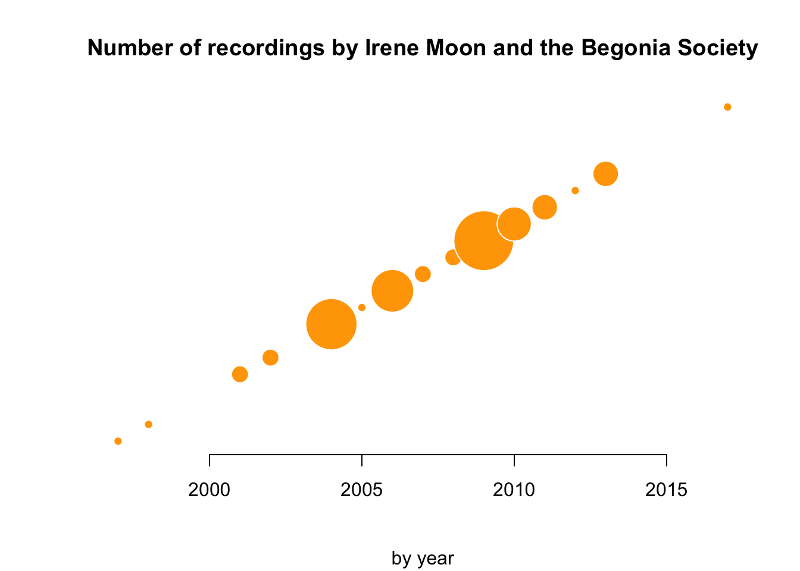

| title | year | format | type | label |
|---|---|---|---|---|
| Scientifically Speaking with Irene Moon | 1997 | Vinyl | 10 inch | Begonia Society |
| Floralaldehyde | 1998 | Vinyl | 12 inch | Begonia Society |
| Grooming Casualties | 2001 | CDr | mini | Begonia Society |
| Suplico #3 | 2001 | CS | Gods of Tundra | |
| Grooming Casualties / phylum forver split | 2002 | CS | split | grel |
| Bofered By Crickets - Stalking Shekinah comp | 2002 | CDr | comp | The White Rose Network |
| Entomelodical Opportunities | 2004 | radio | Begonia Society | |
| For the Neonate | 2004 | Vinyl | 10 inch | Begonia Society |
| The Neithers | 2004 | CS | Begonia Society | |
| Pangolin Variations | 2004 | CDr | Mukow Productions | |
| Dentist Auk / Ortho split | 2004 | Vinyl | 7 inch, split | Ignivomous |
| Flightless For Candy - Windpipe Moods comp | 2004 | CD | comp | Mukow Productions |
| Neither - Soundtrack To Infinity comp | 2005 | CD | comp | WFMU |
| Big Digits / Darker Florida split | 2006 | CS | split | Deathbomb Arc Tape Club |
| Mudboy / Auk Theatre split | 2006 | CS | Dutch Beer / Bread and Animals | |
| History Of Darker Florida Volume II | 2006 | CS | The White Rose Network | |
| Go Away Dreadful Creature - Women Take Back The Noise comp | 2006 | CD | comp | UBUIBI |
| Bat Auk - I Don’t Think The Dirt Belongs To The Grass comp | 2006 | CD | comp | Carbon Records |
| Collection of the Late Howell Bend/ Warmer Milks split | 2007 | Vinyl | 12 inch | Begonia Society |
| History Of Darker Florida Volume I | 2007 | CS | Tin Cans And Twine | |
| Auk Theatre / The Collection Of The Late Howell Bend split | 2008 | CS | split | Taped Sounds |
| Pitter Patter Treat | 2008 | CS | Friends And Relatives Records | |
| Diamonds | 2009 | CS | Shark Bite Tapes | |
| Triffles And True Trifles | 2009 | CDr | Carbon Records | |
| A Host for Ohters | 2009 | CS | The White Rose Network | |
| Tuberculosis Ward | 2009 | CS | Celebrity Sex Tapes | |
| Those Eyes Are Apples - People Skills comp | 2009 | CS | comp | Cryptic Carousel Records, Tin Cans and Twine |
| Centrifuge Heart Sonicator - Zelphabet vol. I | 2009 | CD | comp | Zelphabet |
| Feld - Resonant Hole: Volume One comp | 2009 | CD | comp | Rampart Tapes, Mountaain |
| Beasts For While | 2010 | Vinyl | 11 inch | Ownness Records |
| Dead And Invited You Inside | 2010 | CS | Rampart Tapes | |
| Long Fields | 2010 | Vinyl | Ownness | |
| Bitter Ballads | 2010 | Vinyl | 7 inch | Hollow Bunny Records |
| Women are Magic | 2011 | CS | Hollow Bunny Records | |
| Killer - Fart Filet comp | 2011 | CD | comp | Wheelchair Full Of Old Men |
| Go Away Dreadful Creature - Delirious Music For Delirious People comp | 2011 | CD | comp | NO PART OF IT |
| Lets Talk Science | 2012 | radio | Begonia Society | |
| Bakers Dozen - M - The Thirteenth Letter compilation | 2013 | CD | comp | WFMU |
| Ten Phases of Fallen | 2013 | Vinyl | Nihilist | |
| shadow’s last night: 50th anniversary of the cassette comp | 2013 | CS | comp | The White Rose Network |
| Pocket Gopher - Speak Unless Spoken To compilation | 2017 | CD | comp | WFMU |